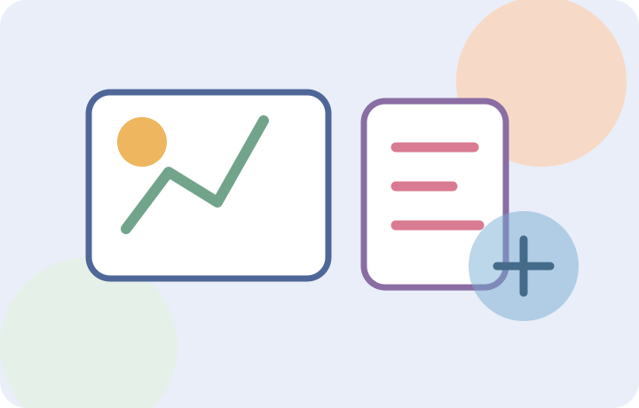
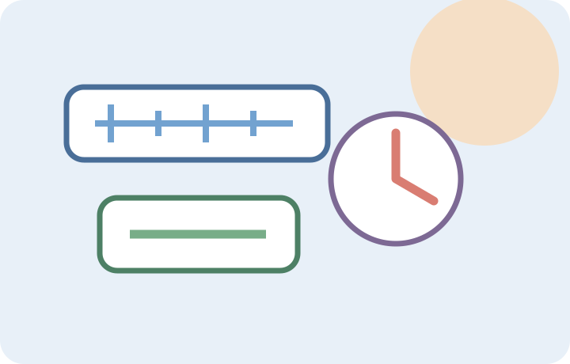
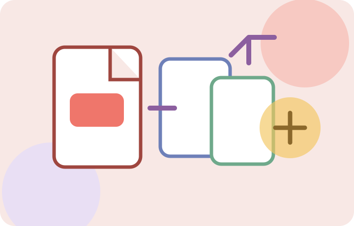
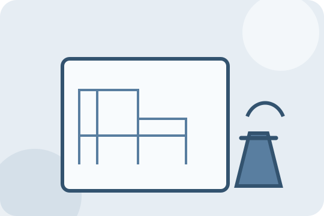

급여·근무 센터
시급·급여·주휴수당·근무시간
5개 도구센터 바로가기 →일상과 업무에 필요한 계산·변환·편집 도구를 한곳에 모았습니다. 설치 없이 바로 실행하고, 자세한 사용방법과 계산 기준까지 함께 확인하세요.

시급·급여·주휴수당·근무시간
5개 도구센터 바로가기 →부가세·공급가액·마진·판매수익
4개 도구센터 바로가기 →
대출·예금·복리 계산
3개 도구센터 바로가기 →날짜·영업일·근속·생활비
8개 도구센터 바로가기 →할인·단가·사이즈 비교
5개 도구센터 바로가기 →
길이·무게·온도·데이터 변환
4개 도구센터 바로가기 →
합치기·나누기·압축·변환·편집
9개 도구센터 바로가기 →압축·크기·변환·자르기·EXIF
11개 도구센터 바로가기 →글자수·정리·중복·정렬·QR
7개 도구센터 바로가기 →번호 생성·랜덤 추첨
2개 도구센터 바로가기 →
평수·축척·면적·철근·콘크리트
4개 도구센터 바로가기 →